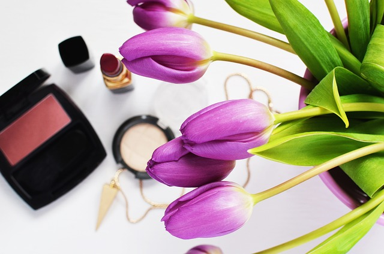

Pursuit of beauty
Concept
We can help you in your quest for beauty. Be more free and fashionable. Be your ideal self.
.png)
Pursuit of beauty
We can help you in your quest for beauty. Be more free and fashionable. Be your ideal self.
Do you know how much lipstick you eat in your lifetime? The cosmetics we recommend are made from natural and organic ingredients and are safe for everyone. We aim to create products that are safe for everyone, from babies to adults. Our staff are also highly trained and experienced. Please feel free to contact us if you have any problems.
Do you know how much lipstick you eat in your lifetime? The cosmetics we recommend are made from natural and organic ingredients and are safe for everyone. We aim to create products that are safe for everyone, from babies to adults. Our staff are also highly trained and experienced. Please feel free to contact us if you have any problems.
Do you know how much lipstick you eat in your lifetime? The cosmetics we recommend are made from natural and organic ingredients and are safe for everyone. We aim to create products that are safe for everyone, from babies to adults. Our staff are also highly trained and experienced. Please feel free to contact us if you have any problems.